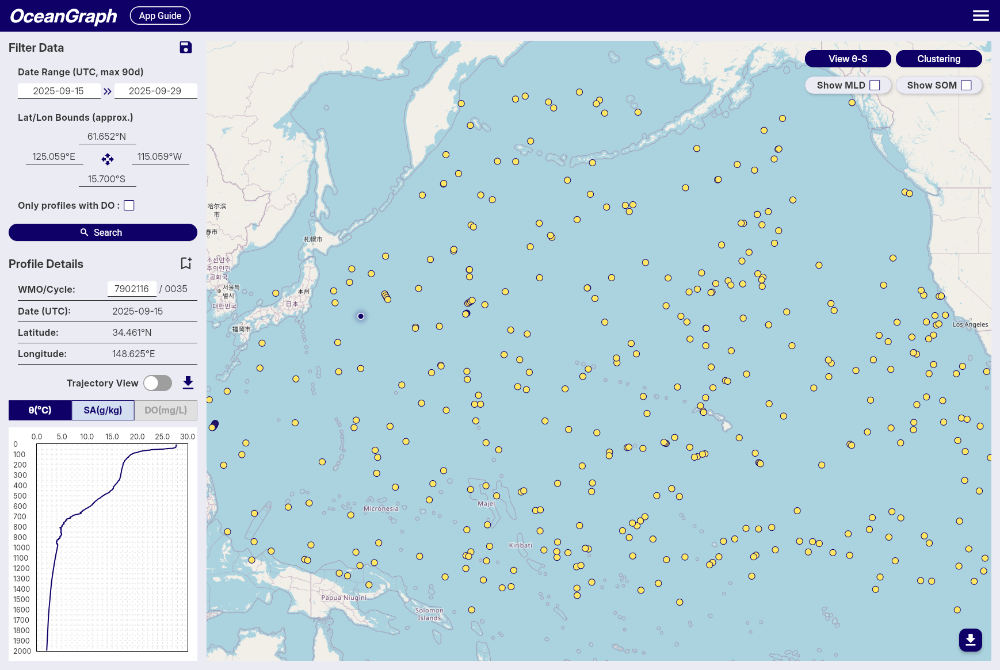
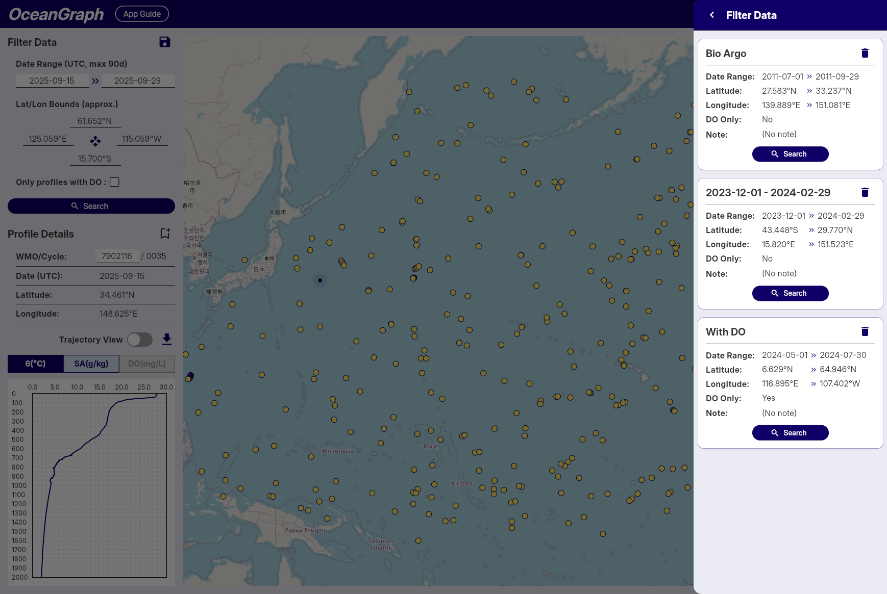
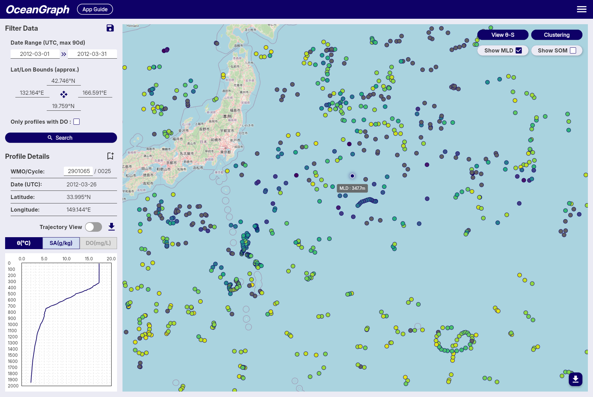
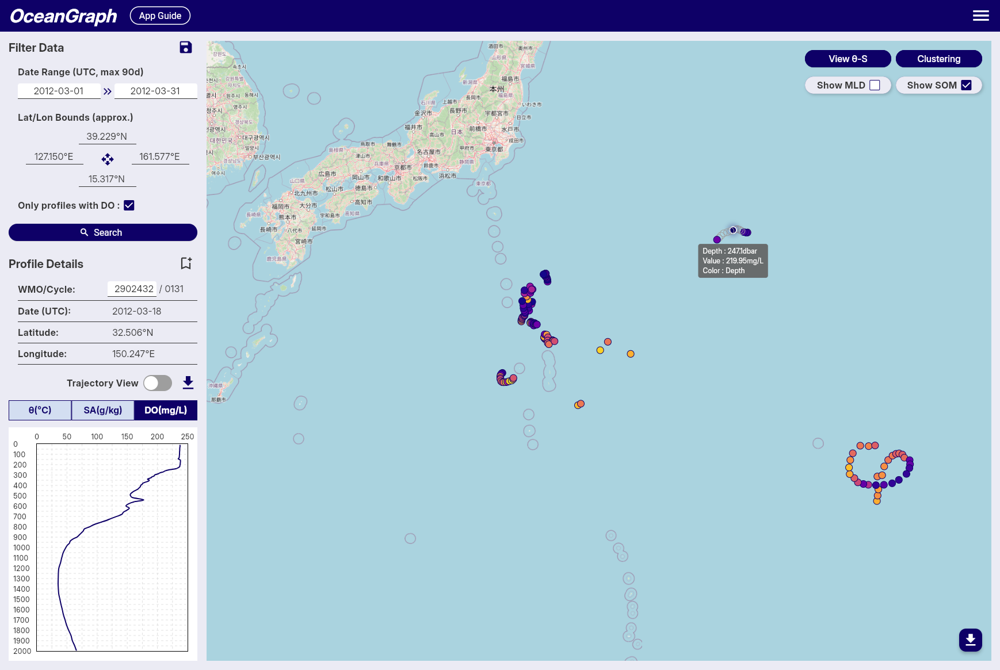

Searching and Analyzing Argo Floats
Search and Bookmark
OceanGraph provides search capabilities to find Argo float profiles based on geographic, temporal, and data quality criteria.
Search Methods

Filter Data Panel
-
Date Range
- Available: October 1999 to present
- Click date fields to select start and end dates
- All times in UTC
-
Geographic Bounds
- Set by interacting with the map
- Coordinates displayed with N/S/E/W format
-
Data Quality
- "Only profiles with DO" checkbox for dissolved oxygen data
-
Save Search Conditions

Note: Available to signed-in users only
- Click save icon to save current search parameters
- Automatic naming by date range
- Access saved searches across sessions
Profile Details Panel
-
WMO ID Search
- Enter WMO ID and press Enter
- Returns all profiles for that specific float
-
Profile Information
- WMO ID, Cycle Number, Date (UTC), Latitude, Longitude
-
Bookmark Profiles

Note: Available to signed-in users only
- Click bookmark icon to save profiles
- Status indication prevents duplicates
- Access bookmarks across sessions
Search Results
- Result count notification
- Profiles displayed as map markers
- Click markers to view profile details
Tips
- Start with broad searches, then narrow down
- Use dissolved oxygen filter for biogeochemical studies
- Save frequently used search patterns
- Bookmark important profiles for future reference
Trajectory and Time-Series Vertical Section
This feature allows you to visualize Argo float data as a time-series vertical section, showing how oceanographic parameters change with depth and time along the float's trajectory. The vertical section provides a comprehensive view of the water column structure throughout the float's journey.

Accessing Time-Series Vertical Sections
To access time-series vertical sections of Argo float data, follow these steps:
- Select a Float: Start by selecting an Argo float from the search results or the map view.
- Turn on Trajectory mode: Turn on the "Trajectory Mode" button to display the vertical section view.
- Show vertical section: Click on the "View Section" button to view the time-series data for the selected float.
Tips
- The vertical section is linked with the vertical profiles in Profile Details, and the position of the selected profile is shown with a dashed line.
- Missing data areas indicate locations where data did not pass quality control (QC).
θ-S Diagram
The θ-S diagram feature allows you to visualize potential temperature-absolute salinity relationships of Argo float profiles in the current search area.

Accessing θ-S Diagram
The θ-S diagram is available to logged-in users only.
- After performing a search, click the View θ-S button in the top-right corner of the map
- The system will generate a θ-S diagram based on the current search results
- The diagram appears as an overlay on the map
Profile Limit
- Maximum 500 profiles can be used to generate a θ-S diagram
- If your search contains more than 500 profiles, an error message will appear
- Narrow your search criteria to reduce the number of profiles
θ-S Diagram Display
Background Chart
- Shows potential temperature (vertical axis) vs absolute salinity (horizontal axis) relationships
- Displays density contour lines and water mass boundaries
Selected Profile Line
- When you select a float on the map, its temperature-salinity profile is highlighted
- Appears as a colored line overlaying the background chart
- Updates automatically when you select different floats
Tips
- Use it to identify different water masses and their characteristics
- The diagram helps understand the oceanographic context of your selected profiles
Background
A θ-S diagram (Temperature-Salinity diagram) is a fundamental tool in oceanography for:
- Identifying water masses and their properties
- Understanding mixing processes between different water types
- Analyzing the vertical structure of the water column
- Detecting seasonal and regional variations in ocean properties
Clustering
OceanGraph provides a beta feature that clusters Argo profiles based on their vertical structure using machine learning. This functionality is experimental and comes with the following limitations and processing steps:
 Note: Gray markers indicate profiles that were excluded from clustering.
Note: Gray markers indicate profiles that were excluded from clustering.
-
Profile Limit
- To reduce server load and memory usage, clustering accepts a maximum of 500 valid profiles per job.
-
Depth Range & Interpolation
- The depth range used for clustering is dynamically determined based on the input profiles:
- Minimum depth: Fixed at 200 dbar to suppress the effects of seasonal thermocline and surface forcing.
- Maximum depth: Automatically set to the 25th percentile of maximum depths across all valid profiles, then rounded down to the nearest 100 dbar increment.
- The maximum depth is capped at 1000 dbar and will not go below the minimum depth of 200 dbar.
- If most of the selected profiles are shallow, the maximum depth threshold is adjusted downward to maximize data utilization.
- Profiles are linearly interpolated every 100 dbar within this determined range to align them on a common vertical grid.
- This adaptive approach ensures optimal clustering performance regardless of the depth characteristics of the selected profiles.
- The depth range used for clustering is dynamically determined based on the input profiles:
-
Required Variables
- Only profiles containing valid temperature and salinity data are considered.
- Profiles missing these variables or lacking coverage in the specified depth range are excluded.
-
Clustering Feature Vector
- Clustering is based on a feature vector composed of interpolated temperature and salinity values, combined with location data.
- Temperature and salinity vectors are standardized using z-score normalization at each depth level to ensure that variations at all depths contribute equally to the clustering process.
- Latitude is included as an additional feature, normalized by linear scaling from -90 to 90 degrees into a range of -1 to 1.
- Longitude is transformed into two features using its sine and cosine values (i.e., sin(λ), cos(λ)), allowing for circular continuity around the ±180° meridian without further normalization.
-
Automatic K Determination
- The number of clusters (K) is selected automatically using a simplified elbow method (with a maximum of 8 clusters).
This feature is available to signed-in users only. While we are actively improving this system, unexpected results or limitations may occur. We appreciate your understanding during this beta period.
Mixed Layer Depth (MLD)
OceanGraph calculates the mixed layer depth (MLD) from individual Argo float profiles based on potential temperature (θ), using the Gibbs SeaWater (GSW) Oceanographic Toolbox for accurate thermodynamic calculations. This method follows a temperature threshold approach, which is commonly used in oceanographic studies.

-
Multi-Parameter Calculation
- MLD is determined using three different oceanographic parameters: potential temperature (θ), absolute salinity, and potential density (σθ).
- Potential temperature and density are calculated using the GSW toolbox based on practical salinity, in-situ temperature, pressure, and latitude.
- This ensures high accuracy and consistency in the estimation of stratification and mixed layer properties across different oceanographic conditions.
-
MLD Definition and Threshold
- The MLD is calculated using three different threshold criteria and defined as the shallowest depth among the three methods:
- Temperature threshold (Δθ): Depth where potential temperature (θ) differs by more than 0.5°C from its value at 10 dbar
- Salinity threshold (ΔSA): Depth where absolute salinity differs by more than 0.05 g/kg from its value at 10 dbar
- Density threshold (Δσθ): Depth where potential density (σθ) differs by more than 0.125 kg/m³ from its value at 10 dbar
- This multi-parameter approach provides a more robust estimation of the mixed layer depth by considering both thermal and haline stratification.
- If no depth is found using any of the three criteria, the MLD is considered undefined for that observation.
- The MLD is calculated using three different threshold criteria and defined as the shallowest depth among the three methods:
-
Data Quality Requirements
- Reference Depth Coverage: The reference depth (10 dbar) must be within the measured pressure range of the profile. If the reference depth falls outside the available data range, MLD calculation is skipped for that profile.
- Shallow Data Availability: A minimum of 3 data points at or above 50 dbar is required for reliable MLD calculation. Profiles with insufficient shallow measurements are excluded from MLD computation to ensure accuracy.
-
Conversion to Depth
- The estimated MLD (in decibars) is converted into physical depth (in meters) using a latitude-dependent algorithm from the UNESCO 1983 standard.
- This conversion allows MLD values to be spatially visualized or regionally compared using consistent units.
-
Color Representation
- For visualizations such as maps, MLD values are mapped to colors using the reversed Viridis colormap (viridis_r in matplotlib), where shallow layers appear bright and deeper layers appear dark.
- Profiles with missing or undefined MLD values are rendered in gray.
This approach provides an accurate and robust estimation of mixed layer depth across a wide range of Argo float profiles by utilizing multiple oceanographic parameters. The multi-threshold method ensures that the MLD estimation captures both thermal and haline stratification effects, making it particularly well-suited for visual analysis and regional comparisons in diverse oceanographic environments.
Subsurface Oxygen Maximum (SOM)
OceanGraph calculates the subsurface oxygen maximum (SOM) for individual Argo float profiles using dissolved oxygen and pressure (or depth) data. This metric is widely used in oceanography to characterize the vertical structure of oxygen, especially in subtropical and tropical regions, where a local maximum often appears just below the surface mixed layer.

-
Definition and Search Range
- The SOM is defined as the local maximum of dissolved oxygen concentration found within the subsurface layer, between the mixed layer depth + 5 dbar and 300 dbar.
- The very shallow layers (e.g., 0–10 dbar) are excluded to avoid the influence of transient surface processes and ensure the detected maximum is truly subsurface.
-
Identification of Local Maximum
- Within the specified pressure range, the oxygen profile is scanned for local maxima, defined as points where the dissolved oxygen concentration is greater than at both adjacent pressure levels.
- If multiple local maxima are present, the one with the highest oxygen concentration is selected as the SOM.
-
Fallback if No Local Maximum Exists
- If no local maximum exists within the subsurface layer (e.g., if the profile is monotonic), the single highest dissolved oxygen concentration within this range is selected as the SOM.
-
Output
- The pressure (or depth) and the corresponding dissolved oxygen concentration of the SOM are recorded for each profile.
- If no valid SOM can be identified (e.g., due to insufficient data points), the SOM is considered undefined for that observation.